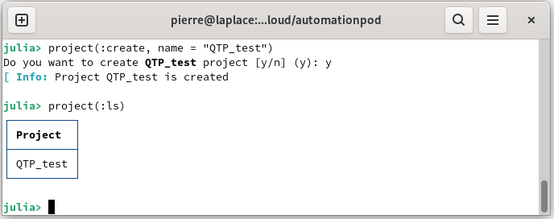
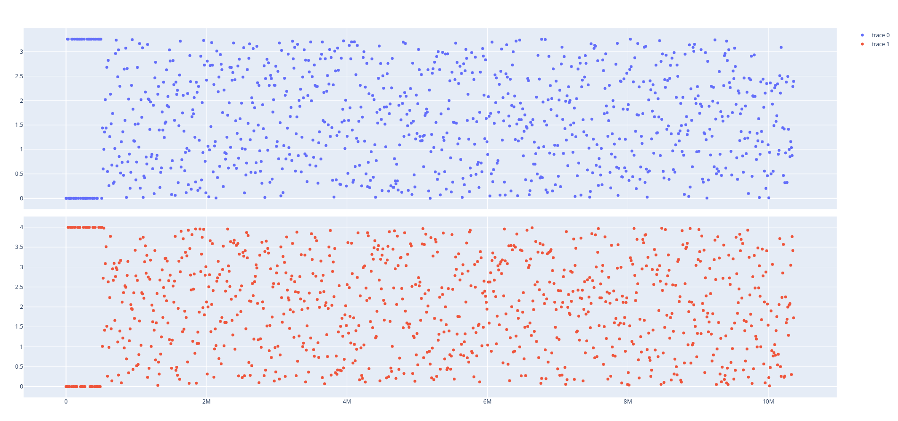

Manage your first data
Before identifying a model of the dynamic system, it is necessary to store the data of the dynamic system on the database. In this tutorial you will learn:
Load data
AutomationLabs can load CSV file to store the data on database and carry out processing on the data. Also, the data will allow the identification of a model. For a quick start, we will use in this example the data from the article [1]. The data can be downloaded on the quadruple tank process repository. The dynamical system has four tanks, two pumps and two three-way valves.

Launch the AutomationLabs:
julia> using AutomationLabsYou can create a new project, because the data, the models, the controllers and the plots are located on a project:
julia> project(:create, name = "QTP_test")You can also, list all the project that are available on the database:
julia> project(:ls)
The inputs of the dynamical system are added to the database:
julia> data(
:add;
project_name = "QTP_test",
path = "path_of_the_CSV_file",
name = "data_inputs_m3h",
)The outputs of the dynamical system are added to the database:
julia> data(
:add;
project_name = "QTP_test",
path = "path_of_the_CSV_file",
name = "data_outputs",
)You can list the raw data that are available on the database, such as:
julia> data(:lsraw, project_name = "QTP_test")
Finally, it is possible to plot the raw data that you have added on the database with the dash command: 
julia> dash(:rawdata,
project_name = "QTP_test",
data_name = "data_inputs_m3h",
recipe = "temporal",
dash_name = "inputs_plot",
)
Input-output data
In order to perform a model identification, the data need to be formatted. As such the io data is introduced:
julia> data(:io,
inputs_data_name = "data_inputs_m3h",
outputs_data_name = "data_outputs",
project_name = "QTP_test",
data_name = "io1",
)where :io is the input-output information, inputs_data_name is the raw data of the dynamical system inputs, outputs_data_name is the raw data of the dynamical system outputs, project_name is the project where the raw are located and where the io data will be located, data_name is the name of the io data. There are additional parameters that allow the data to be processed. For example, it is possible to set a low or high limit on the data, more information can be found in the guides section:
You can list all the io data available on a project:
julia> data(:lsio, project_name = "QTP_test")It is possible to plot the io data that you have processed with the dash command:
julia> dash(:iodata,
project_name = "QTP_test",
data_name = "io1",
recipe = "temporal",
dash_name = "io_plot",
)
Delete data
It is possible to delete the data, such as:
julia> data(:rmio, project_name = "QTP_test", data_name = "io1")julia> model(:rmraw, project_name = "QTP_test", data_name = "data_outputs")julia> model(:rmraw, project_name = "QTP_test", data_name = "data_intputs_m3h")Reference
[1] Blaud, P. C., Chevrel, P., Claveau, F., Haurant, P., & Mouraud, A. (2022). ResNet and PolyNet based identification and (MPC) control of dynamical systems: a promising way. IEEE Access.